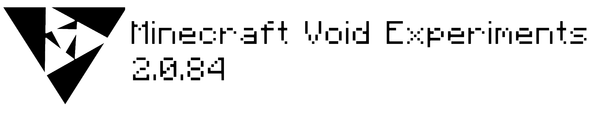
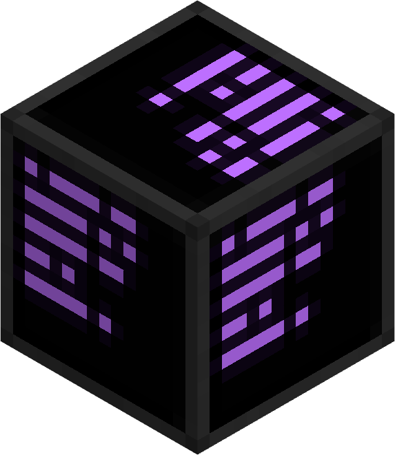
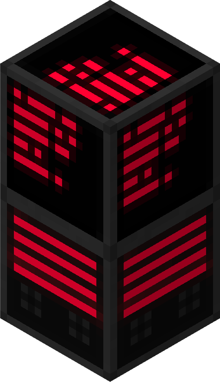
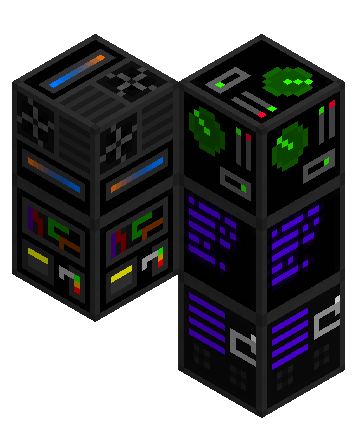
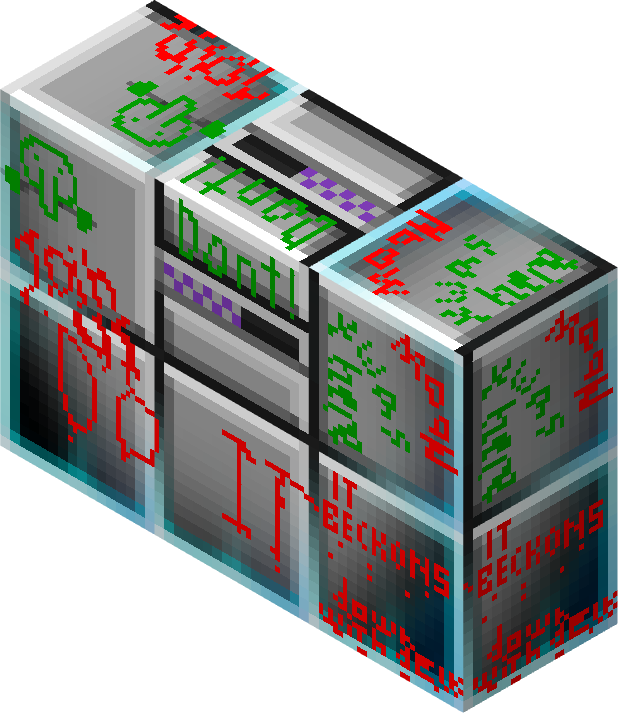

VoidEXP Terminals

Da questa pagina puoi accedere ai terminali di Skybase
Ma alcuni di essi richiedono permessi adeguati

--------------------------
Console Terminal

--------------------------
ADMINSPACE Console

--------------------------
The Void Bridge Console

--------------------------
Broken Console

--------------------------
Alcuni terminali sono sotto manutenzione
Questa pagina è molto importante, nuovi comandi verranno aggiunti in seguito
- Il team di SkyBase, ADMINSPACE, MB delta e DeltaQuest
- Adam